4.4 卡管理
在人事管理页面中，单击【卡管理】标签，进入如下图所示卡管理页面：
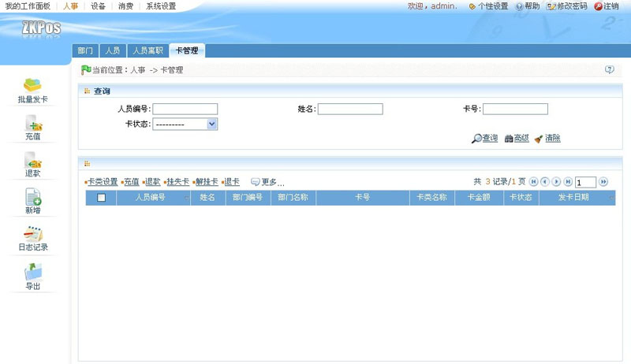
用户可以在此页面中进行发卡、批量发卡、充值、卡类设置、退款、挂失/补办卡等卡管理相关操作。
备注：用户可连接发卡器，将卡片放在发卡器的置卡处，此时发卡器将自动读取卡号并显示在卡号后的输入框中，省去手动输入卡号的麻烦。
4.4.1发卡
在卡管理标签页中，点击【新增】图标，进入如下图所示发卡页面：
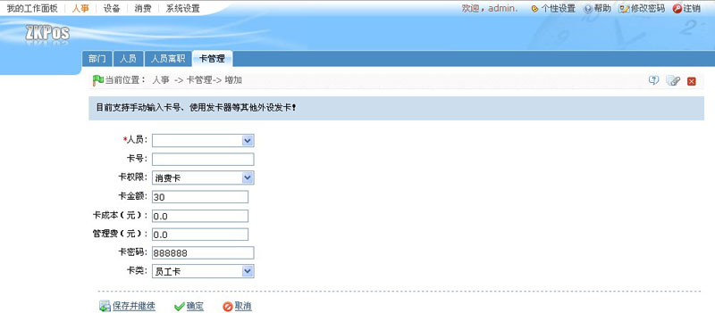
人员：单击 按钮，在弹出的人员窗口中选择人员。人员的选择方法请参见附录1 常用操作中的1人员选择。
按钮，在弹出的人员窗口中选择人员。人员的选择方法请参见附录1 常用操作中的1人员选择。
卡号：输入卡号或通过发卡器读取卡号。
卡权限：单击 按钮，在弹出的选择窗口中选择权限类型，可以选择为消费卡或管理卡。
按钮，在弹出的选择窗口中选择权限类型，可以选择为消费卡或管理卡。
卡金额：默认金额为30，用户可根据实际情况输入金额。
卡成本（元）：输入卡成本。
管理费（元）：输入管理费。
卡密码：默认为888888，用户可根据需要设置密码。卡密码长度不得超过6位数。
卡类：单击 按钮，在弹出的卡类下拉列表中选择卡类。卡类的设置请参见4.4.5卡类设置。
按钮，在弹出的卡类下拉列表中选择卡类。卡类的设置请参见4.4.5卡类设置。
设置完成之后，若需继续发卡，则单击【保存并继续】按钮；若无需继续则单击【确定】按钮；单击【取消】按钮，放弃操作。假设为人员编号为000000001的人员发卡，设置保存后，新增的卡信息将显示在卡管理标签页的卡列表显示区中，如下图所示：
4.4.2批量发卡
在窗口操作选择栏中，单击【批量发卡】图标，进入如下图所示页面：
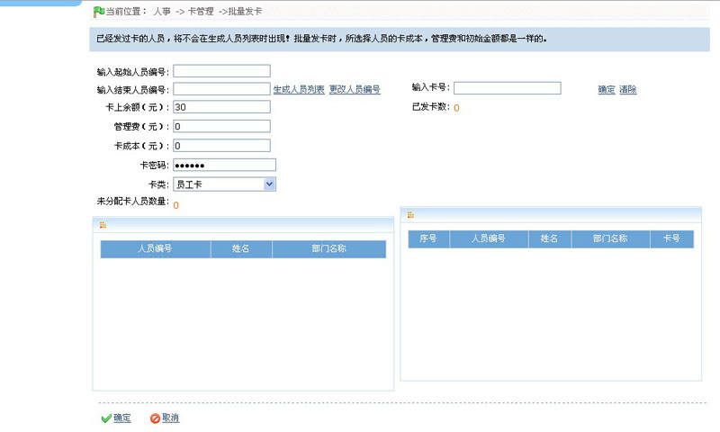
输入起始人员编号：输入编号。
输入结束人员编号：输入编号。
注意：输入的编号请勿超过系统支持的人员编号最大位数。
【生成人员列表】：单击该按钮，在窗口的左边生成人员列表，如下图所示：
【更改人员编号】：单击该按钮，清除输入的起始人员编号和结束人员编号。
假设输入起始人员编号和结束人员编号分别为3和10，并单击【生成人员列表】按钮，页面显示如下图所示：
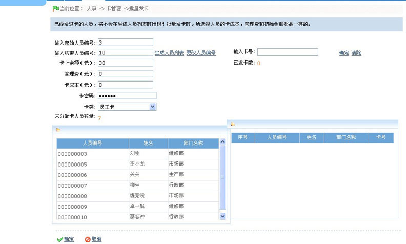
卡上余额（元）：输入卡上余额，默认状态为30。
管理费（元）：输入管理费。
卡成本（元）：输入卡成本。
卡密码：默认密码为888888，用户可根据需要修改密码，密码的最大位数为6位。
卡类：单击 按钮，在弹出的下拉列表中选择卡类。
按钮，在弹出的下拉列表中选择卡类。
未分配卡人员数量：为用户输入的起始人员编号和结束人员编号之间未分配卡的人员总数量。单击【生成人员列表】后，将自动生成。如上图所示，未分配卡人员数量显示为7。
输入卡号：输入准备为人员分配的卡号或通过发卡器读取卡号。
已发卡数：根据当前已发卡的数量自动生成。
输入卡号后，单击【清除】按钮，清除当前输入的卡号；单击【确定】按钮，将自动为左边未分配卡的人员列表的当前第一列人员发卡，分配的卡号即为当前输入的卡号。发卡成功后，将自动清除左边未分配卡人员列表的第一行人员信息，并在右边已分配卡人员列表中显示当前已发卡人员信息。如下图所示：
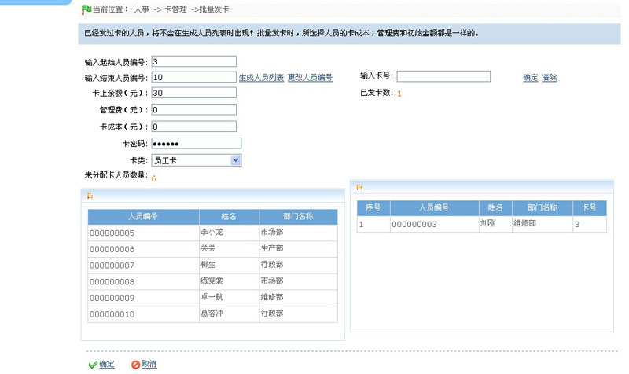
如上图所示，此时未分配卡人员数量自动更新为6，已发卡数显示为1。
为人员发卡后，单击【取消】按钮，取消当前窗口的所有操作，并返回卡管理标签页面；单击【确定】按钮，确定发卡，保存所有信息至系统，并返回卡管理标签页面，此时页面的卡信息列表将显示所有已发卡的人员的卡信息。如下图红色框圈中区域所示：
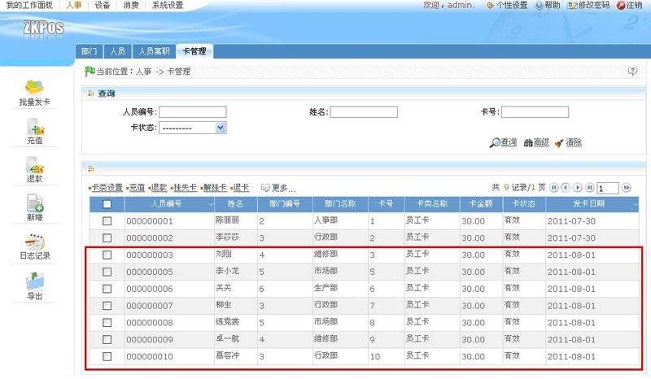
4.4.3充值
该操作，是为已发卡进行充值。系统提供了两种充值方法，具体步骤如下所述。
方法一
1、单击左边窗口操作选择栏的【充值】图标，进入如下图所示充值页面：
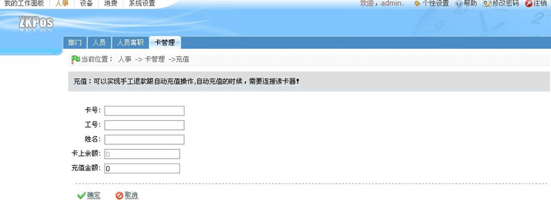
进入页面后，卡信息默认显示为空。输入卡号后，单击空白处，将自动显示与卡号对应的卡信息。
卡号：输入需要充值的卡号或通过发卡器读取卡号。
工号：输入卡号后，单击空白处，将自动生成。
姓名：输入卡号后，自动生成。
卡上余额：输入卡号后，自动生成。
充值金额：输入充值金额。
2、设置完成后，单击【确定】按钮，开始充值。假设输入的卡号为3，充值金额为50，单击空白处后，卡号相关信息显示如下图所示：
此时卡上余额显示为30.00，单击【确定】按钮，充值成功后返回卡管理标签页面，此时在卡信息列表中将显示卡号为3充值后的最新信息，如下图红色框圈中区域所示：
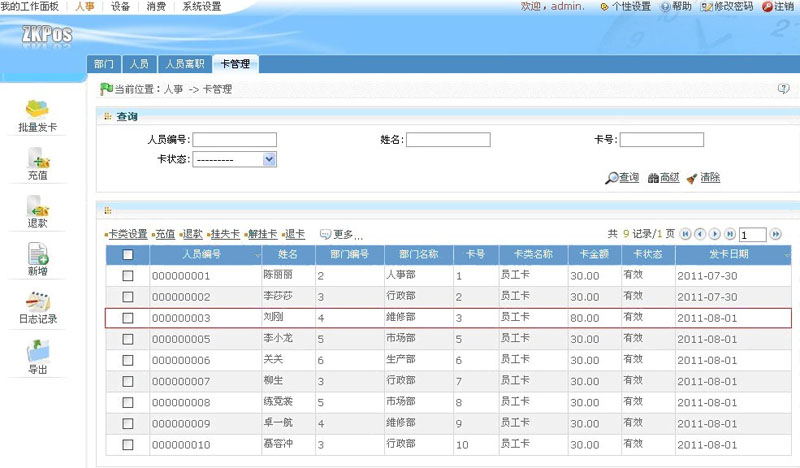
如上图所示：此时卡号为3 的卡金额显示为80.00，即充值成功。
方法二
1、单击需要充值卡号前方的选择框，打钩选中该卡号。
2、假设选中卡号为2的卡，单击卡列表显示区上方的【充值】按钮，进入如下图所示充值页面：
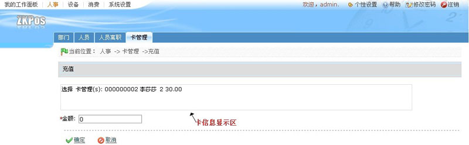
卡信息显示区中，显示了人员编号、姓名、卡号、卡余额的相关信息，此时卡余额为30.00。在金额后输入要充值的金额。假设在金额后的输入框中输入50，单击【确定】按钮，开始充值，充值成功后返回卡管理标签页面，此时卡信息列表中将显示卡号2 充值成功后的卡金额信息。如下图所示：
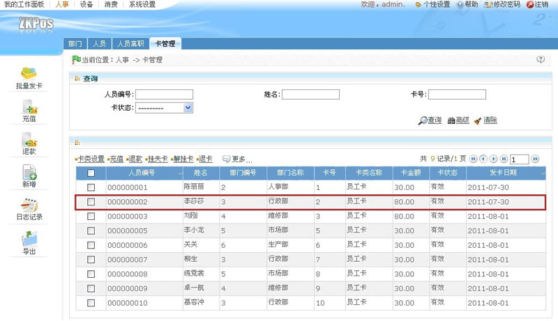
如上图红色框圈中区域所示，此时卡号为2的卡的卡金额显示为原金额30.00加上充值金额50后的值80.00，即充值成功。
J备注：本操作一次只针对一个卡号。
4.4.4退款
注意：只有卡上余额大于0且处于正常状态下的卡（即非挂失卡）才能进行退款操作。
系统提供了两种退款的方法，具体步骤如下所述。
方法一
单击窗口操作选择栏中的【退款】图标，进入如下图所示退款页面：
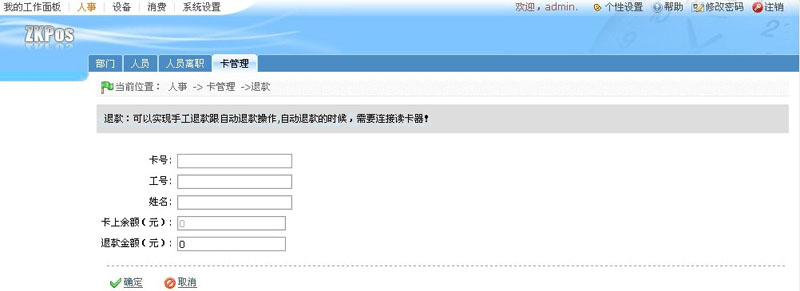
该窗口的操作同4.4.3充值一致，此处不再重述。
部分操作的特别说明：
假设输入的卡号为3，在退款金额出输入金额30，如下图所示:
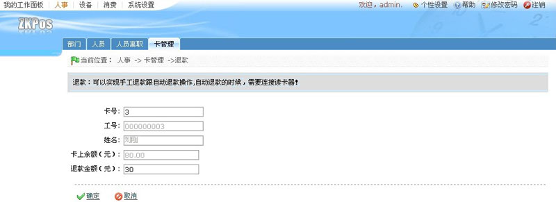
此时卡上余额显示为80.00。单击【确定】按钮后，退款成功并返回卡管理标签页面，此时卡信息列表显示区中卡号为3的信息显示如下图所示：
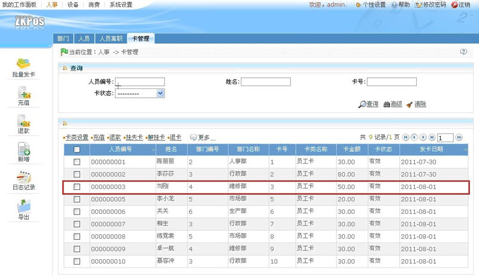
如图中红色框圈中区域所示，此时卡号为3 的卡的余额显示为原卡余额80减去退款金额30后的值50.00，即退款成功。
方法二
1、单击卡号前方的选择框 ，打钩选中该卡号。
，打钩选中该卡号。
2、选中要操作的卡后，单击卡信息显示区域上方的【退款】按钮，进入如下图所示退款页面：
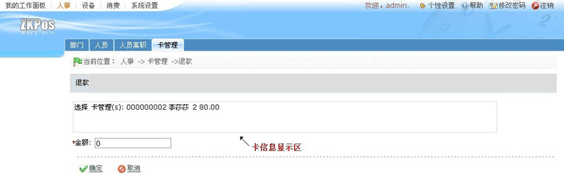
如上图所示，此时卡号为2的卡的卡余额为80.00。假设输入金额为20，单击【确定】按钮，退款成功后返回卡管理标签页面，页面中的卡信息显示如下图所示：
如图中红色框圈中区域所示，此时卡号为2的卡的卡金额显示为60，即原卡余额80.00减去退款金额20后的值，即退款成功。
注意：退款操作一次只针对一个卡号，且退款金额不得大于卡上余额。
4.4.5卡类设置
1、单击卡信息显示列表前面的选择框 ，选中需要修改卡类的卡，可同时选择多个卡，也可单击人员编号列名前方的选择框
，选中需要修改卡类的卡，可同时选择多个卡，也可单击人员编号列名前方的选择框 ，选中所有卡进行编辑。
，选中所有卡进行编辑。
2、假设选中卡号为7的卡后，单击卡信息显示列表上方的【卡类设置】按钮，进入如下图所示卡类设置页面：

卡信息显示区中显示的了该卡的相关信息，包括人员编号、姓名和卡余额。
卡类： 默认显示为员工卡，单击 按钮，在弹出的卡类下拉列表中选择卡类，卡类的设置请参见6.6卡类资料。
按钮，在弹出的卡类下拉列表中选择卡类，卡类的设置请参见6.6卡类资料。
3、单击【确定】按钮，修改卡类信息，并返回卡管理标签页面，此时页面中的卡信息列表将显示修改后的卡信息。
4.4.6挂失卡
1、选择要挂失的卡，卡的选择同4.4.5卡类设置一致，此处不再重述。
2、假设选中卡号为8的卡，单击卡信息显示列表上方的【挂失卡】按钮，进入如下图所示的挂失卡页面：
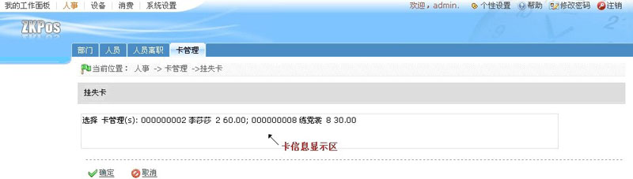
3、单击【确定】按钮，挂失该卡，挂失成功后返回卡管理标签页面，此时卡号为8 的卡的状态显示为挂失，如下图红色框圈中区域所示：
4.4.7解挂卡
注意：只有挂失的卡才能解挂。
1、选择需要解挂的卡，卡的选择同4.4.5卡类设置中一致，此处不再重述。
2、选中需要解挂的卡后，单击卡信息显示列表上方的【解挂卡】按钮，进入如下图所示的解挂卡页面：
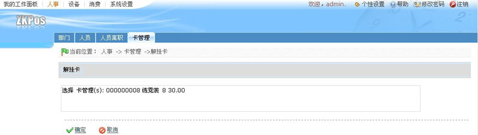
3、单击【确定】按钮，解挂该卡，解挂成功后返回卡管理标签页面，此时卡信息列表中该卡的状态显示为有效，即挂失成功，如下图红色框圈中区域所示：
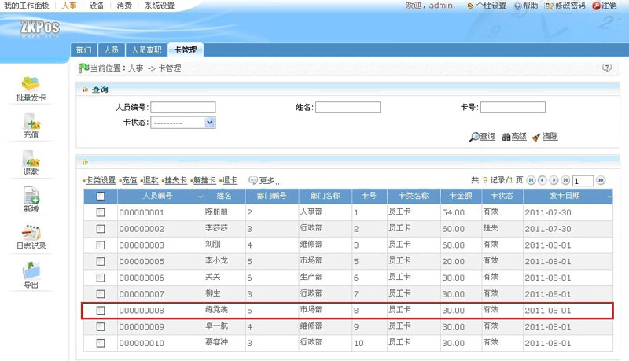
4.4.8退卡
1、选择需要退卡的卡，卡的选择方式与4.4.5卡类设置一致，此处不再重述。
2、假设选中卡号为7的卡，单击卡信息显示列表上方的【退卡】按钮，进入如下图所示的退卡页面：
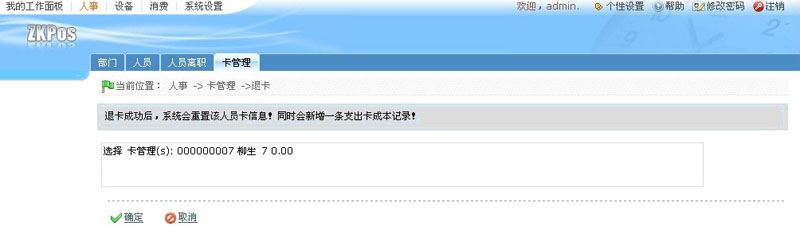
3、单击【确定】按钮，执行退卡操作。退卡成功后，返回卡管理标签页面，此时卡信息列表中将不再显示该卡号信息。
注意：（1）、只有卡余额为0且卡状态为有效的卡才能执行退卡操作，若卡余额不为0，用户需先执行退款操作，具体步骤请参见4.4.4退款；若为挂失卡，退卡前需先解挂卡，具体步骤请参见4.4.7解挂卡；
（2）、退卡成功后，该卡号可重新分配给其他人员发卡使用。
4.4.9补办卡
注意：只有挂失的卡才能进行补办卡操作。
1、选择需要补办卡的卡，卡的选择同4.4.5卡类设置一致，此处不再重述。
2、将鼠标光标移动至【更多】图标出，系统自动弹出如下图所示的下拉列表：
3、单击补办卡选项，进入如下图所示补办卡页面:
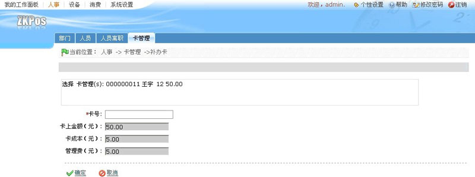
如上图所示，此时页面中显示了该卡号的卡上余额、卡成本和管理费。
卡号：输入卡号，该卡号必须是当前未被使用的。
4、如上图所示，该人员原先分配的卡号为12，假设输入的卡号为15，单击【确定】按钮，为该人员补办卡，补办成功后返回卡管理标签页面，此时该人员对应的卡号变更为15，且卡状态显示为有效。如下图红色框圈中区域所示：
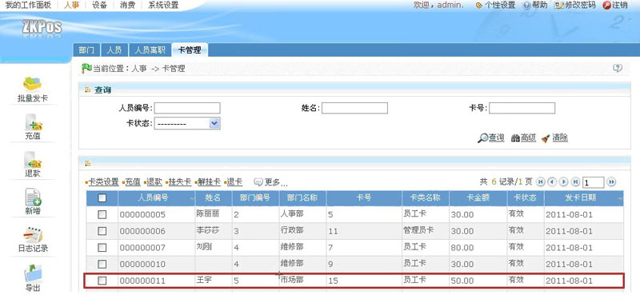
备注：补办卡修改的只是卡号，卡余额、卡成本和管理费都将与原卡一致。
4.4.10修改卡密码
1、选择需要修改密码的卡，卡的选择同4.4.5卡类设置一致，此处不再重述。
2、将鼠标光标移动至【更多】图标出，系统自动弹出如下图所示的下拉列表：

3、单击修改卡密码选项，进入如下图所示修改卡密码页面：
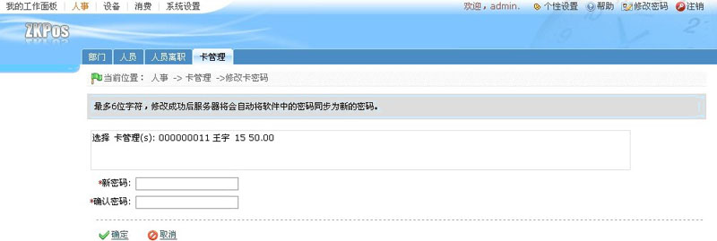
新密码：输入新密码。
确认密码：输入密码，与新密码一致。
4、单击【确定】按钮，修改密码，并返回卡管理标签页面。
4.4.11卡查询
该窗口操作与同4.1.3部门查询一致，此处不再重述。
4.4.12日志记录
点击窗口操作选择栏中的【日志记录】图标，弹出如下图所示的日志记录窗口：
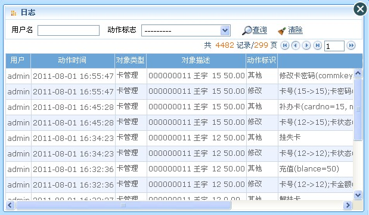
该窗口操作同4.1.4日志记录一致，此处不再重述。
备注：卡记录的导出请参见附录1 常用操作中的5导出，此处不再重述。